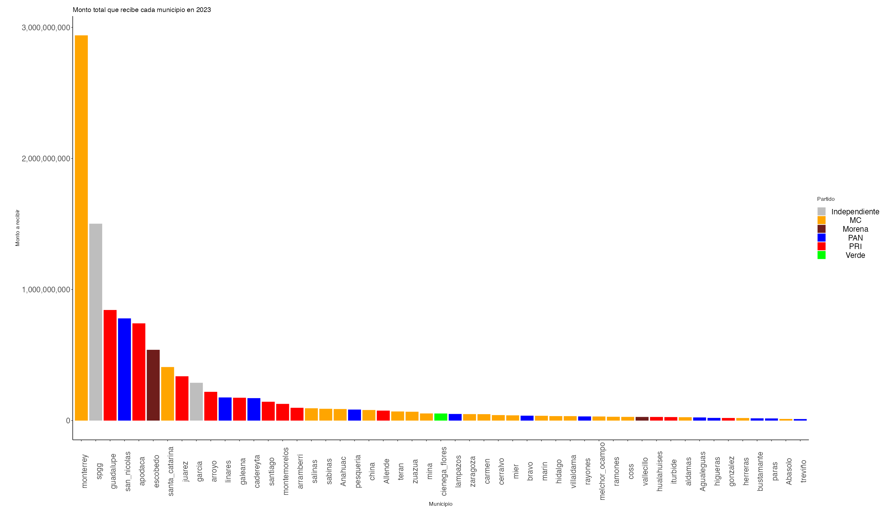
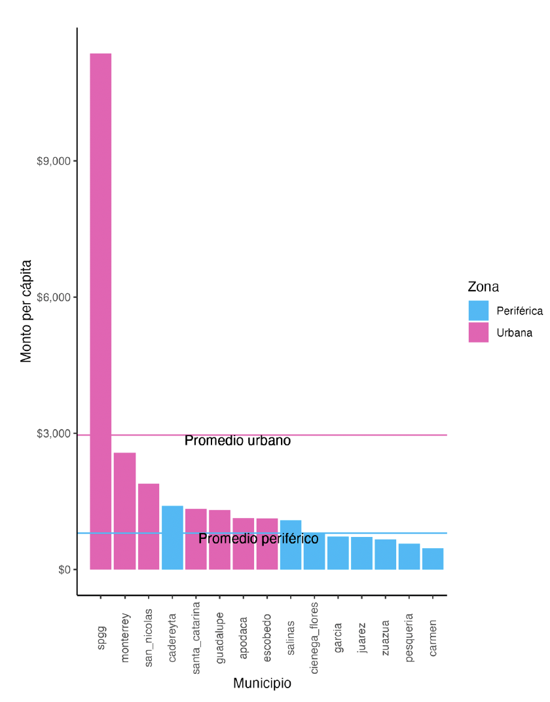

Policy brief · Spanish original, 2023
This brief looks at the Ley de Coordinación Hacendaria (Fiscal Coordination Law) of the state of Nuevo León. The law gives the greatest weight to how efficiently municipalities collect local taxes, which favors those that already take in more revenue and can widen inequalities. To inform the debate, the brief introduces a tool that lets users study the effects of possible changes to the distribution formula. The goal is to improve public understanding, support discussion of possible reforms, help identify fiscal inequalities and improve the use of public resources.
The Ley de Coordinación Hacendaria of Nuevo León sets how the state must share out the revenue-sharing funds (participaciones) it receives from the federal government. About 20% of that money goes directly to municipalities. The formula in Article 14 of the law sets the rules. It makes collection efficiency the main factor in deciding the distribution and leaves population, territory and poverty in second place.
Nuevo León is the only state in Mexico that gives collection efficiency more than 40% of the weight in its formula. As a result, the municipalities that receive the most money from the state are also the ones that collect the most locally. For high-income municipalities such as San Pedro Garza García or Monterrey, this creates a virtuous cycle: more revenue-sharing gives them more capacity to collect local taxes, which brings them even more revenue-sharing the following year. For municipalities with low local collection, such as Juárez or Pesquería, the cycle is vicious. For these reasons, several mayors and treasurers have pushed to change the formula to give more weight to other factors, such as population.
Population is the most important coefficient in most states’ laws. Of Mexico’s 32 states, 23 use population as the main factor in distributing money to municipalities. San Luis Potosí gives it the most weight: each municipality’s share of the population decides 85% of the budget. That contrasts sharply with its neighbor Nuevo León, which distributes 22% of the budget based on population.
This brief presents a fiscal simulator built around Articles 14 and 19 of Nuevo León’s law. Section two describes the status quo using the same charts available in the simulator. Section three explains how the formula works. Section four sets out the parameters users can change in the simulator. The conclusion discusses some implications of making this tool public.
Under Article 14 of the law, the funds distributed to municipalities come from:
This pool, which reached 10,998 million pesos in 2023, is slightly more than the initial cost of the Dos Bocas refinery. The money helps pay for municipal services such as infrastructure maintenance and public safety. A central reason many states make population the most important coefficient is the expectation that residents should receive similar public spending per person. Giving population heavy weight ensures that municipal spending per resident is similar across the state.
In Nuevo León, revenue-sharing is distributed unequally. In 2023 Juárez received 338 million pesos in total, a little over 700 pesos per person. San Pedro Garza García received 1,502 million pesos, almost 12,000 pesos per person. The disparity is striking: San Pedro receives 17 times more funding per person than Juárez.
Figure 1 shows how municipalities such as Monterrey and San Pedro receive far more than the rest.


Figure 2 shows revenue-sharing per person. Reading it requires the distinction between peripheral and urban zones. Peripheral municipalities sit at the edge of the Monterrey Metropolitan Area and have seen large population increases over the last decade; they include Juárez, Cadereyta, Salinas and Zuazua. The average per-person amount in urban municipalities is much higher than in peripheral ones. The only peripheral municipality that receives more than any urban one is Cadereyta, which gets more than Santa Catarina, Guadalupe, Apodaca and Escobedo.
Revenue-sharing per person is far higher in San Pedro than anywhere else, up to four times the second-highest (Monterrey). García, Juárez, Zuazua, Pesquería and El Carmen receive even less than the peripheral average. In short, there is a serious imbalance between municipalities, driven largely by geography.
This imbalance feeds directly into the quality of public services municipalities can provide. Take public works: according to their 2023 budgets, San Pedro allocated 1,560 pesos per person to public works, while Juárez allocated 825 pesos per person. The distribution of revenue-sharing has a direct effect on the services residents receive.
Municipalities like San Pedro, backed by much larger funding, can provide high-quality services and better government. Municipalities like Juárez, with limited resources, struggle to provide adequate services and sink into a vicious cycle. Poor services lead to more abandoned homes, security problems and bad infrastructure, which in turn lowers tax collection and deepens their underfunding.
It is therefore essential to review how municipal revenue-sharing is distributed in Nuevo León. Avoiding sharp disparities and seeking a more equitable distribution would let every resident receive a similar level of service from their municipality, strengthening collective well-being and social stability across the state.
The law sets how 20% of federal revenue-sharing is divided among the state’s 51 municipalities. The distribution of these 10,998 million pesos follows a formula that considers each municipality’s capacity to collect taxes, its population, its territory and its social needs.
The formula sets each municipality’s share (PART) using three coefficients, each with its own weight:
In addition, a compensation mechanism ensures that no municipality receives less than the previous year (adjusted for inflation). If a municipality would receive less, surpluses from other municipalities cover the difference.
Since 2022 the law includes a transitional rule: the current year’s amount depends largely on what the municipality received in 2021, and the coefficients affect only the amount added on top of that year.
Together, these mechanisms aim to distribute the fund taking into account each municipality’s collection efficiency, size, population and social needs, while guaranteeing that none receives less from one year to the next.
The tool lets users experiment with the distribution by changing the coefficients in the formula: collection efficiency (CER), population and territory (CEPT), and social needs (CIMP), and see how each change affects the final distribution.
There are several ways to use it:
The simulator makes the logic of the distribution easier to understand and lets users explore the consequences of possible changes to Article 14. It can help residents better understand how state money flows to municipalities.
The tool can help users understand in more depth how resources are distributed to municipalities in Nuevo León. It may also be useful for:
H. Congreso del Estado de Nuevo León. Ley de Coordinación Hacendaria del Estado de Nuevo León. June 16, 2023. www.hcnl.gob.mx. Accessed December 10, 2023.